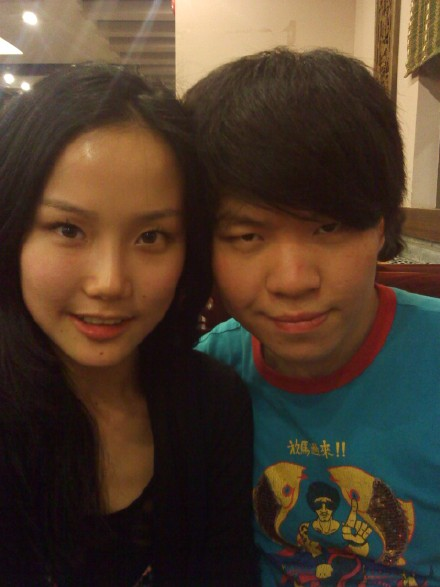

去楼下跑了两圈，被否定的心舒服了一些。。。
第一回演《弘一》是去年的10月，记得每天都有人来和我讲，“黄龄你唱的真好，黄龄你第一次演音乐剧这样已经很不容易了，黄龄你是最棒的”听了这些话，我除了高兴和感谢大家对我的肯定之外，其实我心里明白，我做的不够好，这只是一个新手应该有的水准，但我不能对自己那么没要求，无论是表演上还是唱歌上，我都需要好好学习.
演音乐剧和专辑还不一样，做歌手有自己的个性做自己就好了，爱怎么唱就怎么唱，自己爽就好了。但是演音乐剧就不同了，你要不开口的时候站在那里就必须是那个人物。
再过两天，全新改编的音乐剧《弘一》又要再次上演了，大家会看我第一次挑战老年的李萍香哦，这对我来说非常有压力，要演好一个角色真的不容易，而我只能尽量每次排练都试着用心去感受，有被自己感动到流眼泪，也真的以为感动到了别人，呵呵，这些天反复一次一次的排练，似乎已经演成习惯了，虽然不够好，但正常发挥的话还算过的去。没想到我这些天所有的自我陶醉都被一位老师用冷水泼醒了，老师说：“我一直都没有找你，因为我觉得你应该满难的，从你的独唱开始，到你遇见你的心上人，到最后老去，你的情绪完全不对，演唱的时候很不自然，太悲伤，太做作了，唱歌要像说话一样的，要有起伏，那样才高级，什么叫唱歌你懂吗？”我听完他这番话，有自知之明的情况下心想也不至于像他说的那么差，所以心里多少有些反感，但是还是很谦虚很无辜的说了一句：哦，我也不知道哦.
老师继续：你平时都是这样讲话的吗？你让我怎么教你，应该积极一点，你这样太消极了。。。。
唉，不说了，不管怎样老师说的是有道理的，有些表演上示范的确很值得我学习，他的那套练歌方法也从来没有人教过我，很特别，8号要演出了，希望自己能消化多少是多少吧，加油加油。
只不过但是当着那么多人的面那么直接的否定一个女孩子的男生还是第一次见，我知道自己有问题，所以老师今天的那番直接的话让我怀疑身边总是和我说好话的人也许只是不想让我难受，敷衍我一下。。。
常石磊我好想你哦，想念我们一起录音的日子。。。
